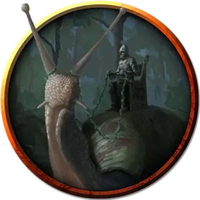

Хангхарасск
Haungharassk
Огромный Зверь, без мировоззрения, именной НИП

Класс Доспеха 6
Хиты 52 (7к12 + 7)
Скорость 10 футов, лазая 10 футов
| мод | спас | ||
|---|---|---|---|
| СИЛ | 20 | +5 | +5 |
| ЛОВ | 3 | −4 | −4 |
| ТЕЛ | 13 | +1 | +1 |
| мод | спас | ||
|---|---|---|---|
| ИНТ | 3 | −4 | −4 |
| МДР | 10 | +0 | +0 |
| ХАР | 3 | −4 | −4 |
Опасность 0
Бонус мастерства +2
Особенности
Магические свойства. Действием существо может прикоснуться к живой улитке, получая при этом 6 временных хита на 24 часа. Любое коснувшееся живой улитки существо или предмет, также получает преимущества заклинания снятие проклятья [remove curse]. Умирая, улитка теряет все свои магические свойства.
Лазанье. Хангхарасск может лазать по сложным поверхностям, включая потолки, без совершения проверок характеристик.
Чувствительность к соли. Брошенный на кожу улитки фунт соли наносит ей 1к6 урона кислотой.
Описание
Хангхарасск - это волшебная, с раковиной из сверкающего золота, улитка размером со слона.